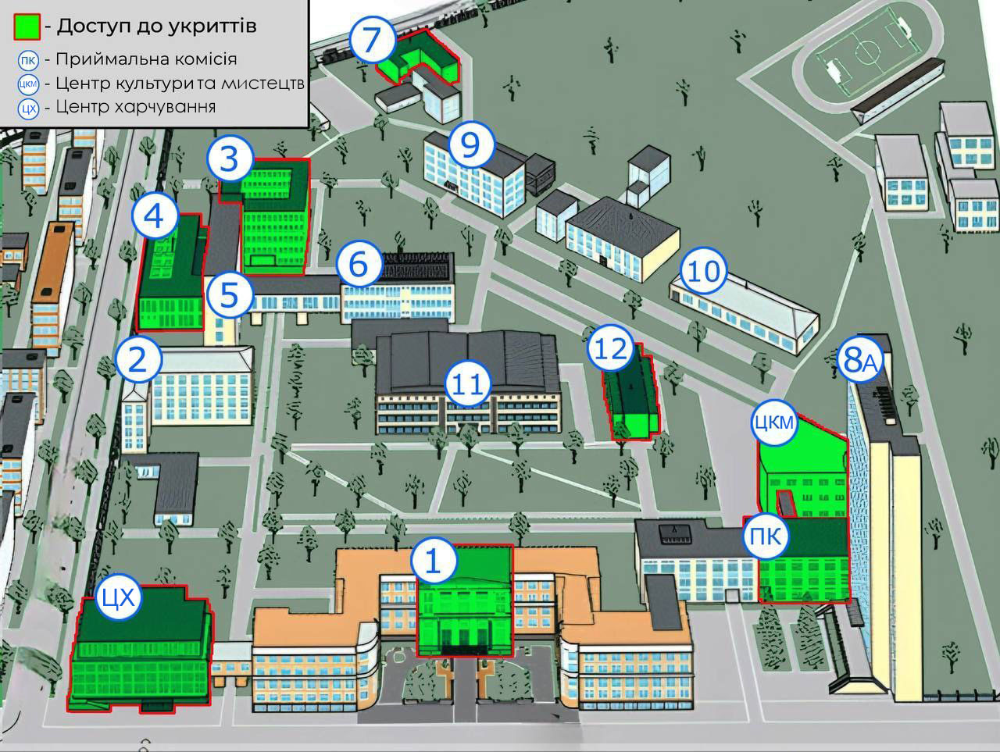

There was a stirring in the shadows, and from all around lithe dark shapes crept stealthily over the rocks. Unsheathed claws glinted in the moonlight. Wary eyes flashed like amber. And then, as if on a silent signal, the creatures leaped at each other, and suddenly the rocks were alive with wrestling, screeching cats.
Pascow stopped near SMUCKY THE CAT HE WAS OBEDIANT and turned back toward Louis. The horror, the terror; he felt these things would grow in him until his body blew apart under their soft yet implacable pressure. Pascow was grinning. His bloody lips were wrinkled back from his teeth and his healthy road-crew tan in the moon’s bony light had become overlaid with the white of a corpse about to be sewn into its winding shroud.
Зазвичай, вбудовані системи є складовою частиною пристрою, включаючи апаратне забезпечення та механічні елементи. На противагу вбудованим, загальні комп'ютерні системи (такі як персональний комп'ютер) призначені для виконання широкого кола завдань. Вбудовані системи присутні у багатьох сучасних приладах.
<!DOCTYPE html><html><head><title> та введіть заголовок<body>| Імʼя | Прізвище | Телефон |
|---|---|---|
| Андрій | невідомо | |
| Оля | Колобок | 0681112233 |
